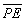
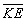
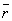

An Introduction to the Electronic Structure of Atoms
and Molecules
Dr. Richard F.W. Bader
Professor of Chemistry / McMaster University / Hamilton,
Ontario
|
Angular Momentum of an Electron in an H Atom
The simplest classical model of the hydrogen atom is one in which the
electron moves in a circular planar orbit about the nucleus as previously
discussed and as illustrated in Fig. 3-7.
The angular momentum vector M in this figure is shown at an angle
q with respect to some arbitrary axis in space.
Assuming for the moment that we can somehow physically define such an axis,
then in the classical model of the atom there should be an infinite number
of values possible for the component of the angular momentum vector along
this axis. As the angle between the axis and the vector M varies
continuously from 0°, through 90° to 180°, the component of
M along the axis would vary correspondingly from M to zero
to -M. Thus the quantum mechanical statements regarding the angular
momentum of an electron in an atom differ from the classical predictions
in two startling ways. First, the magnitude of the angular momentum (the
length of the vector M) is restricted to only certain values given
by:
The magnitude of the angular momentum is quantized. Secondly, quantum
mechanics states that the component of M along a given axis can
assume only (2l + 1) values, rather than the infinite number allowed
in the classical model. In terms of the classical model this would imply
that when the magnitude of M is  (the value when l = 1), there are only three allowed values for
q,
the angle of inclination of M with respect to a chosen axis.
(the value when l = 1), there are only three allowed values for
q,
the angle of inclination of M with respect to a chosen axis.
The angle q is another example
of a physical quantity which in a classical system may assume any value,
but which in a quantum system may take on only certain discrete values.
You need not accept this result on faith. There is a simple, elegant experiment
which illustrates the "quantization" of q, just
as a line spectrum illustrates the quantization of the energy.
If we wish to measure the number of possible values which
the component of the angular momentum may exhibit with respect to some
axis we must first find some way in which we can physically define a direction
or axis in space. To do this we make use of the magnetism exhibited by
an electron in an atom. The flow of electrons through a loop of wire (an
electric current) produces a magnetic field (Fig.
3-11). At a distance from the ring of wire, large compared to
the diameter of the ring, the magnetic field produced by the current
appears to be the same as that obtained from a small bar magnet with a
north pole and a south pole. Such a small magnet is called a magnetic dipole,
i.e., two poles separated by a small distance.
Fig. 3-11. The magnetic field produced by a current
in a loop of wire.
The electron is charged and the motion of the electron
in an atom could be thought of as generating a small electric current.
Associated with this current there should be a small magnetic field. The
magnitude of this magnetic field is related to the angular momentum of
the electron's motion in roughly the same way that the magnetic field produced
by a current in a loop of wire is proportional to the strength of the current
flowing in the wire.
The strength of the atomic magnetic dipole is given
by m where:
Just as there is a fundamental unit of negative charge denoted by
e-
so there is a fundamental unit of magnetism at the atomic level denoted
by bm and called the Bohr
magneton. From equation (5) we can
see that the strength of the magnetic dipole will increase as the angular
momentum of the electron increases. This is analogous to increasing the
magnetic field by increasing the strength of the current through a circular
loop of wire The magnetic dipole, since it has a north and a south pole,
will define some direction in space (the magnetic dipole is a vector quantity).
The axis of the magnetic dipole in fact coincides with the direction of
the angular momentum vector. Experimentally, a collection of atoms behave
as though they were a collection of small bar magnets if the electrons
in these atoms possess angular momentum. In addition, the axis of
the magnet lies along the axis of rotation, i.e., along the angular momentum
vector. Thus the magnetism exhibited by the atoms provides an experimental
means by which we may study the direction of the angular momentum vector.
If we place the atoms in a magnetic field they
will be attracted or repelled by this field, depending on whether or not
the atomic magnets are aligned against or with the applied field. The applied
magnetic field will determine a direction in space. By measuring
the deflection of the atoms in this field we can determine the directions
of their magnetic moments and hence of their angular momentum vectors
with respect to this applied field. Consider an evacuated tube with
a tiny opening at one end through which a stream of atoms may enter (Fig.
3-12). By placing a second small hole in front of the first, inside
the tube, we will obtain a narrow beam of atoms which will pass the length
of the tube and strike the opposite end. If the atoms possess magnetic
moments the path of the beam can be deflected by placing a magnetic field
across the tube, perpendicular to the path of the atoms. The magnetic field
must be one in which the lines of force diverge thereby exerting an unbalanced
force on any magnetic material lying inside the field. This inhomogeneous
magnetic field could be obtained through the use of N and S poles of the
kind illustrated in Fig. 3-12. The direction of
the magnetic field will be taken as the direction of the z-axis.

Fig. 3-12. The atomic beam apparatus.
Let us suppose the beam consists of neutral atoms
which possess
units of electronic angular momentum (the angular momentum quantum number
l = 1). When no magnetic field is present, the beam of atoms strikes
the end wall at a single point in the middle of the detector.
What happens when the magnetic field is present? We must assume that before
the beam enters the magnetic field, the axes of the atomic magnets are
randomly oriented with respect to the z-axis. According to the concepts
of classical mechanics, the beam should spread out along the direction
of the magnetic field and produce a line rather than a point at the end
of the tube (Fig. 3-13a). Actually, the beam is
split into three distinct component beams each of equal intensity producing
three spots at the end of the tube (Fig. 3-13b).
Fig. 3-13. (a) The result of the atomic
beam experiment as predicted by classical mechanics,
(b) The observed result of the atomic beam experiment.
The startling results of this experiment can be explained
only if we assume that while in the magnetic field each atomic magnet could
assume only one of three possible orientations with respect to the applied
magnetic field (Fig. 3-14).
Fig. 3-14.
The three possible orientations for the total magnetic moment with respect
to an external magnetic field for an atom with l =1.
The atomic magnets which are aligned perpendicular to the direction
of the field are not deflected and will follow a straight path through
the tube. The atoms which are attracted upwards must have their magnetic
moments oriented as shown. From the known strength of the applied inhomogeneous
magnetic field and the measured distance through which the beam has been
deflected upwards, we can determine that the component of the magnetic
moment lying along the z-axis is only bm
in magnitude rather than the value of
This latter value would result if the axis of the atomic magnet was parallel
to the z-axis, i.e., the angle q = 0°. Instead
q
assumes a value such that the component of the total moment lying
along the z-axis is just lbm.
Similarly the beam which is deflected downwards possesses a magnetic moment
along the z-axis of -bm
or -lbm.
The classical prediction for this experiment assumes that q
may equal all values from 0° to 180°, and thus all values (from
a maximum of
(q = 0°) to 0 (q
=90°) to
(q = 180°)) for the component of the atomic
moment along the z-axis would be possible. Instead, q
is found to equal only those values such that the magnetic moment along
the z-axis equals +bm,
0 and -bm.
The angular momentum of the electron determines the
magnitude and the direction of the magnetic dipole. (Recall that the vectors
for both these quantities lie along the same axis.) Thus the number of
possible values which the component of the angular momentum vector may
assume along a given axis must equal the number of values observed for
the component of the magnetic dipole along the same axis. In the present
example the values of the angular momentum component are +1(h/2p),
0 and -1(h/2p), or since l = 1
in this case, + l(h/2p), 0 and
-l(h/2p). In general, it is found
that the number of observed values is always (2l + 1) the values
being:
for the angular momentum and:
for the magnetic dipole. The number governing the magnitude of the component
of M and ,
ranges from a maximum value of l and decreases in steps of unity
to a minimum value of -l. This number is the third and final quantum
number which determines the motion of an electron in a hydrogen atom. It
is given the symbol m and is called the magnetic quantum number.
In summary, the angular momentum of an electron in the
hydrogen atom is quantized and may assume only those values given by:
Furthermore, it is an experimental fact that the component of the angular
momentum vector along a given axis is limited to (21 + 1) different
values, and that the magnitude of this component is quantized and governed
by the quantum number m which may assume the values l, l-1,
. . .,0, . . .,-l. These facts are illustrated in Fig.
3-15 for an electron in a d orbital in which l =
2.
(a)
(b)
Fig. 3-15. Pictorial representation of the quantum
mechanical properties of the angular momentum of a d electron for
which l = 2. The z-axis can be along any arbitrary direction
in space. Figure (a) shows the possible components which the angular momentum
vector (of length )
may exhibit along an arbitrary axis in space. A d electron may possess
any one of these components. There are therefore five states for a d
electron,
all of which are physically different. Notice that the maximum magnitude
allowed for the component is less then the magnitude of the total angular
momentum. Therefore, the angular momentum vector can never coincide with
the axis with respect to which the observations are made. Thus the
x
and y components of the angular momentum are not zero. This is illustrated
in Fig. (b) which shows how the angular momentum vector may be oriented
with respect to the z-axis for the case m = l = 2.
When the atom is in a magnetic field, the field exerts a torque on the
magnetic dipole of the atom. This torque causes the magnetic dipole and
hence the angular momentum vector to precess or rotate about the direction
of the magnetic field. This effect is analogous to the precession of a
child's top which is spinning with its axis (and hence its angular momentum
vector) at an angle to the earth's gravitational field. In this case the
gravitational field exerts the torque and the axis of the top slowly revolves
around the perpendicular direction as indicated in the figure. The angle
of inclination of M with respect to the field direction remains
constant during the precession. The z-component of M is therefore
constant but the x and y components are continuously changing.
Because of the precession, only one component of the electronic angular
momentum of an atom an be determined in a given experiment.
The quantum number m determines the magnitude of
the component of the angular momentum along a given axis in space. Therefore,
it is not surprising that this same quantum number determines the axis
along which the electron density is concentrated. When m = 0 for
a p electron (regardless of the n value, 2p, 3p,
4p, etc.) the electron density distribution is concentrated along
the z-axis (see Fig.
3-10) implying that the classical axis of rotation must lie
in the x-y plane. Thus a p electron with m = 0 is
most likely to be found along one axis and has a zero probability of being
on the remaining two axes. The effect of the angular momentum possessed
by the electron is to concentrate density along one axis. When m
= 1 or -1 the density distribution of a p electron is concentrated
in the x-y plane with doughnut-shaped circular contours. The m
= 1 and -1 density distributions are identical in appearance. Classically
they differ only in the direction of rotation of the electron around the
z-axis; counter-clockwise for m = +1 and clockwise for m =
-1. This explains why they have magnetic moments with their north poles
in opposite directions.
We can obtain density diagrams for the m = +1 and
-1 cases similar to the m = 0 case by removing the resultant angular
momentum component along the z-axis. We can take combinations of
the m = +1 and -1 functions such that one combination is concentrated
along the x-axis and the other along the y-axis, and both
are identical to the m = 0 function in their appearance. Thus these
functions are often labelled as px, py
and pz functions rather than by their m
values. The m value is, however, the true quantum number and we
are cheating physically by labelling them px, py
and pz . This would correspond to applying the
field first in the z direction, then in the x direction and
finally in the y direction and trying to save up the information
each time. In reality when the direction of the field is changed, all the
information regarding the previous direction is lost and every atom will
again align itself with one chance out of three of being in one of the
possible component states with respect to the new direction.
We should note that the r dependence
of the orbitals changes with changes in n or l, but the directional
component changes with l and m only. Thus all s orbitals
possess spherical charge distributions and all p orbitals possess
dumb-bell shaped charge distributions regardless of the value of n.
Table 3-1.
The Atomic Orbitals for the Hydrogen Atom
|
En
|
n |
l |
m
|
|
Symbol for orbital |
|
|
-K
|
1 |
0 |
0
|
|
1s |
|
|
|
2 |
0 |
0
|
|
2s |
|
| 2 |
1 |
1
|
|
2p+1 |
ö |
| 2 |
1 |
0
|
|
2p0 |
ýpx,
py, pz |
| 2 |
1 |
-1
|
|
2p-1 |
þ |
|
|
3 |
0 |
0
|
|
3s |
|
| 3 |
1 |
1
|
|
3p+1 |
ö |
| 3 |
1 |
0
|
|
3p0 |
ýpx,
py, pz |
| 3 |
1 |
-1
|
|
3p-1 |
þ |
| 3 |
2 |
2
|
|
3d+2 |
ö |
| 3 |
2 |
1
|
|
3d+1 |
| |
| 3 |
2 |
0
|
|
3d0 |
ý |
| 3 |
2 |
-1
|
|
3d-1 |
| |
| 3 |
2 |
-2
|
|
3d-2 |
þ |
Table 3-1
summarizes the allowed combinations of quantum numbers for an electron
in a hydrogen atom for the first few values of n; the corresponding
name (symbol) is given for each orbital. Notice that there are n2
orbitals for each value of n, all of which belong to the same quantum
level and have the same energy. There are n - 1 values of l
for each value of n and there are (2l + 1) values of m
for each value of l. Notice also that for every increase in the
value of n, orbitals of the same l value (same directional
dependence) as found for the preceding value of n are repeated.
In addition, a new value of l and a new shape are introduced. Thus
there is a repetition in the shapes of the density distributions along
with an increase in their number. We can see evidence of a periodicity
in these functions (a periodic re-occurrence of a given density distribution)
which we might hope to relate to the periodicity observed in the chemical
and physical properties of the elements. We might store this idea in the
back of our minds until later.
We can summarize what we have found so far regarding
the energy and distribution of an electron in a hydrogen atom thus:
| (i) |
The energy increases as n increases, and depends only on
n, the principal quantum number. |
| (ii) |
The average value of the distance between the electron and the nucleus
increases as n increases. |
| (iii) |
The number of nodes in the probability distribution increases as n
increases. |
| (iv) |
The electron density becomes concentrated along certain lines (or in
planes) as l is increased. |
Some words of caution about energies and angular momentum
should be added. In passing from the domain of classical mechanics to that
of quantum mechanics we retain as many of the familiar words as possible.
Examples are kinetic and potential energies, momentum, and angular momentum.
We must, however, be on guard when we use these familiar concepts in the
atomic domain. All have an altered meaning. Let us make this clear by considering
these concepts for the hydrogen atom.
Perhaps the most surprising point about the quantum mechanical
expression for the energy is that it does not involve r, the distance
between the nucleus and the electron. If the system were a classical one,
then we would expect to be able to write the total energy En
as:
Both the KE and PE would be functions of r, i.e.,
both would change in value as r was changed (corresponding to the
motion of the electron). Furthermore, the sum of the PE and KE
must always yield the same value of En which is to remain
constant.

Fig.3-16. The potential energy diagram for an
H atom with one of the allowed energy values superimposed on it.
Fig 3-16
is the potential energy diagram for the hydrogen atom and we have superimposed
on it one of the possible energy levels for the atom, En.
Consider a classical value for r at the point A". Classically,
when the electron is at the point A", its PE is given by
the value of the PE curve at A'. The KE is thus
equal to the length of the line A - A' in energy units. Thus the
sum of PE + KE adds up to En.
When the electron is at the point B", its
PE
would equal En and its KE would be zero. The electron
would be motionless. Classically, for this value of En
the electron could not increase its value of r beyond the point
represented by B". If it did, it would be inside the "potential
wall." For example, consider the point C". At this value of r,
the PE is given by the value at C' which is now greater
than En and hence the KE must be equal to the
length of the line C - C'. But the KE must now be negative
in sign so that the sum of PE and KE will still add up to
En.
What does a negative KE mean? It doesn't mean anything as it never
occurs in a classical system. Nor does it occur in a quantum mechanical
system. It is true that quantum mechanics does predict a finite probability
for the electron being inside the potential curve and indeed for all values
of r out to infinity. However, the quantum mechanical expression
for En does not allow us to determine the instantaneous
values for the PE and KE. Instead, we can determine only
their average values. Thus quantum mechanics does not give equation (6)
but instead states only that the average potential and kinetic
energies may be known:
A bar denotes the fact that the energy quantity has been averaged over
the complete motion (all values of r) of the electron.
Why can r not appear in the quantum mechanical expression
for En, and why can we obtain only average values for
the KE and PE? When the electron is in a given energy level
its energy is precisely known; it is En. The uncertainty
in the value of the momentum of the electron is thus at a minimum. Under
these conditions we have seen that our knowledge of the position of the
electron is very uncertain and for an electron in a given energy level
we can say no more about its position than that it is bound to the atom.
Thus if the energy is to remain fixed and known with certainty, we cannot,
because of the uncertainty principle, refer to (or measure) the electron
as being at some particular distance r from the nucleus with some
instantaneous values for its PE and KE. Instead, we may have
knowledge of these quantities only when they are averaged over all possible
positions of the electron. This discussion again illustrates the pitfalls
(e.g., a negative kinetic energy) which arise when a classical picture
of an electron as a particle with a definite instantaneous position is
taken literally.
(Click
here for note.)
It is important to point out that the classical expressions
which we write for the dependence of the potential energy on distance,
-e2/r for the hydrogen atom
for example, are the expressions employed in the quantum mechanical calculation.
However, only the average value of the PE may be calculated and
this is done by calculating the value of -e2/r
at every point in space, taking into account the fraction of the total
electronic charge at each point in space. The amount of charge at a given
point in three-dimensional space is, of course, determined by the electron
density distribution. Thus the value of 
for the ground state of the hydrogen atom is the electrostatic energy of
interaction between a nucleus of charge +1e with the surrounding
spherical distribution of negative charge.
We can say more about theand
for an electron in an atom. Not only are these values constant for a given
value of n, but also for any value of n,
Thus the
is always positive and equal to minus one half of the .
Since the total energy En is negative when
the electron is bound to the atom, we can interpret the stability of atoms
as being due to the decrease in the
when the electron is attracted by the nucleus.
The question now arises as to why the electron doesn't
"fall all the way" and sit right on the nucleus. When r = 0, thewould
be equal to minus infinity, and the ,
which is positive and thus destabilizing, would be zero. Classically this
would certainly be the situation of lowest energy and thus the most stable
one. The reason for the electron not collapsing onto the nucleus is a quantum
mechanical one. If the electron was bound directly to the nucleus with
no kinetic energy, its position and momentum would be known with certainty.
This would violate Heisenberg's uncertainty principle. The uncertainty
principle always operates through the kinetic energy causing it to become
large and positive as the electron is confined to a smaller region of space.
(Recall that in the example of an electron moving on a line, the
increased as the length of the line decreased.) The smaller the region
to which the electron is confined, the smaller is the uncertainty in its
position. There must be a corresponding increase in the uncertainty of
its momentum. This is brought about by the increase in the kinetic energy
which increases the magnitude of the momentum and thus the uncertainty
in its value. In other words the bound electron must always possess kinetic
energy as a consequence of quantum mechanics.
The
and have
opposite dependences on .
The decreases
(becomes more negative) as decreases
but the
increases (making the atom less stable) as decreases.
A compromise is reached to make the energy as negative as possible (the
atom as stable as possible) and the compromise always occurs when .
A further decrease in would
decrease the
but only at the expense of a larger increase in the .
The reverse is true for an increase in .
Thus the reason the electron doesn't fall onto the nucleus may be summed
up by stating that "the electron obeys quantum mechanics, and not classical
mechanics."